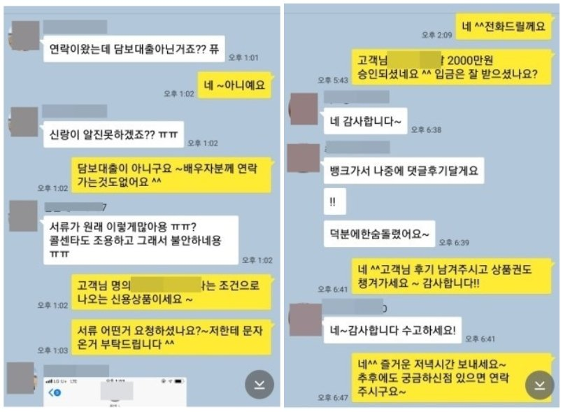

기대출 과다한 주부, 무설정 하우스론으로 2000만원 승인사례!!!
안녕하세요~ 오늘은 제가 상담드린 최**고객님의 대출 사례를 안내해 드리겠습니다.
최**고객님께서는 소득확인이 되지 않는 주부님 이였고 기대출은 아주캐피탈3000만원,
카드론1000만원, 현금서비스300만원, 새마을금고600만원, 우리은행(아파트담보대출)
억원을 사용중이였습니다. 주부님 조건으로 추가 진행하기에는 대출금액이 과다한
상황이였습니다. 하지만 다행이 고객님 명의로 된 아파트를 보유하고 있으셨고,
저는 본인소유 아파트로 진행가능한 무설정 하우스론을 선정하여 조회해드린 결과,
한 금융사에서 추가자금 2000만원이 가능하다는 결과를 받았습니다.
최**고객님께서는 필요자금 뿐만 아니라 기존 카드론과 현금서비스까지 대환하실
수 있어서 매우 만족해 하셨습니다. 아래는 저와 최**고객님의 카톡상담 내용
일부를 캡쳐한것이오니, 참고하시어 많은 도움 되셨으면 좋겠습니다. 감사합니다.^^
